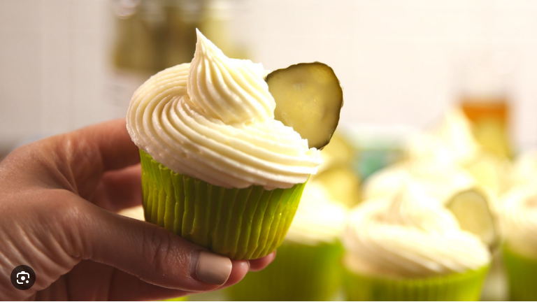

Description
This strange dish combines the salty, tangy flavor of dill pickles with the sweetness of cupcakes,
, creating a unique and unexpected flavor combination. The crispy fried exterior of the pickles pairs perfectly with the soft,
fluffy texture of the cupcakes, while the ranch dressing adds a creamy, cool finish. Give it a try if you're feeling adventurous!
Ingredients
- 1 jar of dill pickles
- 1 cup of flour
- 1 teaspoon of baking powder
- 1/2 teaspoon of salt
- 1/2 teaspoon of garlic powder
- 1/4 teaspoon of cayenne pepper
- 1/2 cup of milk
- 1 egg
- Oil for frying
Steps
- Preheat your deep fryer or a large pot of oil to 375°F (190°C).
- Drain the jar of pickles and pat them dry with paper towels.
- In a mixing bowl, combine the flour, baking powder, salt, garlic powder, and cayenne pepper.
- In a separate bowl, whisk together the milk and egg.
- Remove the pickles from the fryer and place them on a paper towel-lined plate to drain any excess oil.
- To make the cupcake base, use a box of your favorite cake mix and follow the instructions on the back.
- Once the cupcakes are baked and cooled, use a small knife to cut out a small hole in the center of each cupcake.
- Place a fried pickle into the hole of each cupcake, pressing it down slightly.
- Top each cupcake with a dollop of ranch dressing or your favorite dipping sauce.
- Serve and enjoy your Deep-Fried Pickle Cupcakes!